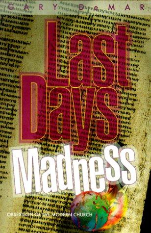
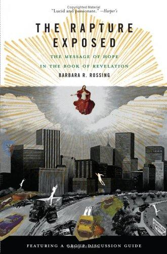

Recommended Reading
Books that helped us escape the Rapture countdown and discover something better.
These are the books that changed how our staff reads Scripture. They are not light reading — they are the kind of books that require a highlighter, a notebook, and a willingness to admit you might have been wrong. We speak from experience.
Start Here
The Last Days According to Jesus
The most accessible introduction to partial preterism from one of the 20th century's most trusted Bible teachers. Sproul wrestles honestly with Matthew 24 and concludes that most of it was fulfilled in AD 70. Essential first read.
Buy on Amazon
Last Days Madness
A comprehensive and often hilarious demolition of newspaper exegesis and date-setting. DeMar catalogs decades of failed predictions and traces them to a faulty hermeneutic. Excellent for sharing with your dispensationalist uncle.
Buy on AmazonHe Shall Have Dominion
The definitive systematic defense of postmillennialism. Dense, thorough, and rewarding. Gentry covers the biblical, historical, and theological case for a victorious, Kingdom-advancing eschatology. The comprehensive reference on postmill thought.
Buy on AmazonGo Deeper
Paradise Restored
A warm, pastoral, and richly biblical case for postmillennialism. Chilton writes with joy and theological depth, tracing the story of God's dominion mandate from creation to consummation. More accessible than Gentry and equally convincing.
Buy on AmazonBefore Jerusalem Fell
A detailed scholarly argument that the book of Revelation was written before AD 70, which dramatically changes how you read it. Gentry marshals historical, internal, and external evidence to establish the early date. Technical but essential for serious students.
Buy on AmazonEnd Times Fiction
A point-by-point response to the Left Behind series, examining the theological assumptions behind Tim LaHaye's claim that the novels are "the first fictional portrayal of prophetic events true to literal Bible prophecy." DeMar responds graciously, wittily, and with thorough documentation.
Buy on AmazonHeaven Misplaced: Christ's Kingdom on Earth
Wilson makes the postmillennial case with his signature wit and pastoral directness. One of the most readable and enjoyable introductions to a victorious, Kingdom-advancing eschatology — especially for readers who find academic theology heavy going. Short chapters, discussion questions included.
Buy on AmazonWhen the Man Comes Around
Wilson's passage-by-passage commentary on the book of Revelation, showing how John's most notorious prophecies concern the fall of Jerusalem in AD 70. Convictional, clear, and characteristically unafraid to take the preterist reading seriously. A fitting companion to Heaven Misplaced.
Buy on AmazonFor the Historically Curious
If you want to understand how dispensationalism became the dominant eschatology of American evangelicalism — and why it is historically quite recent — these resources are invaluable:
-

The Rapture ExposedA readable historical and theological critique of Rapture theology from a New Testament scholar. Rossing traces the origins of dispensationalism and offers a compelling alternative vision of hope rooted in Revelation's actual message.Buy on Amazon -
On the Road to ArmageddonAcademic history of dispensationalism in America — how a relatively new 19th-century theological system became the default eschatology of American evangelical Christianity. Scholarly but accessible, and eye-opening.Search on Amazon
-
The Puritan HopeRecovers the postmillennial optimism of the Reformers and Puritans, showing that the gloomy end-times pessimism of modern evangelicalism is historically anomalous. If your tradition has roots in historic Protestant Christianity, this book is especially illuminating.Buy on Amazon
"For the earth will be filled with the knowledge of the glory of the Lord as the waters cover the sea." — Habakkuk 2:14. This is not a caption for a retreat. It is a promise about history.